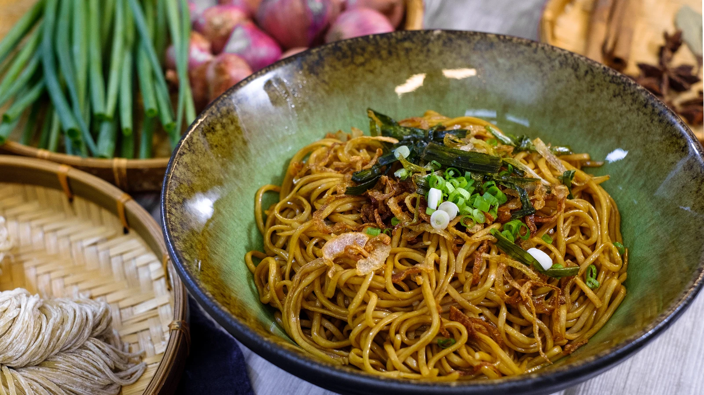

scallion-oil-noodles
by Henry
WHAT ARE SCANLLION OIL NOODLES
Scallion oil noodles are a humble dish originating in Shanghai. In appearance, it’s as simple as can be:
boiled noodles coated with a shiny, brown sauce, and topped with fried scallions.
Yet, this dish can effortlessly excite your taste buds, a true example
to prove the concept of “Less is more” The key flavors of the dish come
from scallions and soy sauce. These two basic ingredients play star roles in
many popular Chinese recipes, such as Scallion Oil Chicken, Scallion Pork Chops,
Scallion Ginger Salmon, Scallion Tofu, and more.
Thanks to a short list of ingredients and simple preparation, this dish makes an
incredibly beginner-friendly dish that I encourage everyone to try.
